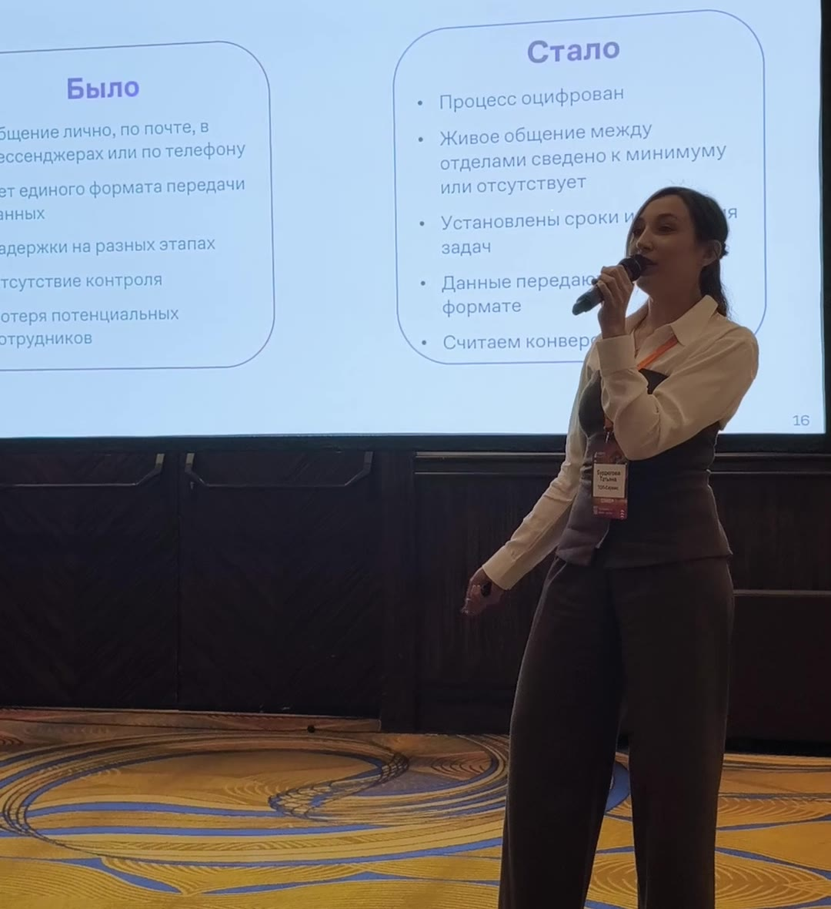
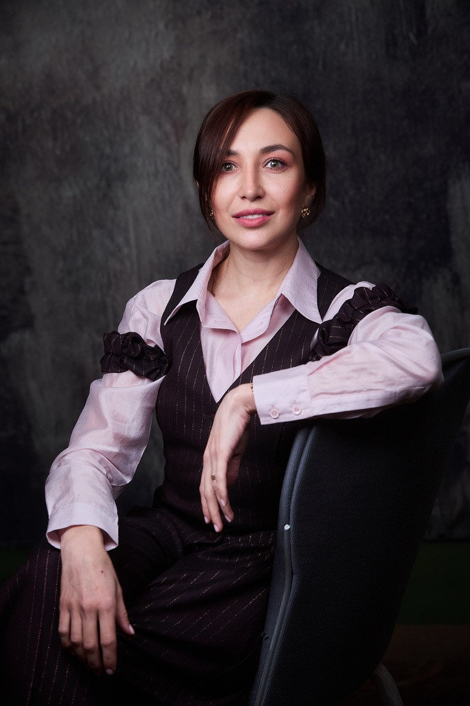

01
ИИ в реальном бизнесе
Как ИИ на самом деле приживается в большой сервисной компании: где он честно забирает рутину, где становится помощником аналитика и где без человека по-прежнему никуда. Ответственность не автоматизируется.
Рассказываю, как ИИ и цифровизация приживаются в реальном бизнесе: в большой сервисной компании с тысячами сотрудников, а не в презентациях. Без восторгов и без страшилок, с цифрами и честными выводами.
строю системы в бизнесе: от таблиц 2009 года до ИИ
собственного дела: холдинг из 13 юридических лиц
человек в отраслевом сообществе, которое я вела: около 70% рынка
высших образования, сейчас MBA в МГУ
Москва, «Крокус Экспо», павильон 1, зал G, 11:15. Бесплатный билет для посетителей по промокоду TG2026
Каждое выступление собираю под задачу площадки и аудитории: от отраслевой сцены до лекции для студентов.
Как ИИ на самом деле приживается в большой сервисной компании: где он честно забирает рутину, где становится помощником аналитика и где без человека по-прежнему никуда. Ответственность не автоматизируется.
Почему автоматизация так часто не взлетает и как подготовить компанию к цифре. Программа ускоряет то, что уже есть: порядок или хаос. Семнадцать лет внедрений, и всё начиналось с процессов.
Сколько теперь стоит работа, если ИИ ускорил её в десять раз. Почему умирает оплата за часы, что дешевеет, что дорожает и почему главным навыком эпохи становится отбор.
Организаторы приглашают повторно: в анонсе CleanExpo 2026 я спикер CleanExpo 2025 и конференций CNews.

Доклад «ИИ наводит порядок: эволюция инструмента в большой клининговой компании».
Доклад о цифровизации сервисного бизнеса: сначала процесс, потом инструмент.
Лекция для студентов: как на самом деле устроена операционка большой компании.
Модерация сессии «Автоматизация бизнес-процессов и ИИ в клининге» и доклад «Чистый код. Строим цифровой фундамент клининговой компании». Благодарность площадки.
Обсуждение реформирования отрасли.
Самое свежее и все разборы выходят в моём Telegram-канале «Между цифрой и кофе».
18 ноября расскажу, как ИИ приживается в большой сервисной компании: от протоколов встреч до прототипов, которые собираются за вечер.
В каналеПочему автоматизация поверх сломанного процесса его не чинит, а ускоряет то, что работало плохо. Запись выступления целиком.
СмотретьЕсли работа ускорилась в десять раз, оплата за часы обесценивает исполнителя. Цена равна ценности результата плюс ответственности за него.
Читать
Я захожу в незнакомые сферы без «правильного» диплома и разбираюсь быстрее. Так устроен мой мозг.
Свою первую систему я придумала в 2009 году, на первом месте работы: расчёт объёмов для управленческого учёта, ещё в таблицах. На третьем курсе, без экономического образования, собрала тарифную сетку окладов и объясняла цифры финансовому директору. Дальше были финансы, запуск компании с нуля и внедрения учётных систем в разных отраслях.
Восемь лет у меня было собственное дело в сфере технического осмотра: больше 26 пунктов, холдинг из 13 юридических лиц, больше 1500 услуг операторам рынка и отраслевой канал, который читали около 70% рынка. Там я научилась говорить с каждым на его языке: с чиновником официально, с оператором по-человечески, с финансистом цифрами.
Сейчас отвечаю за стратегическое развитие сервисной компании с тысячами сотрудников и объектов: процессы, цифровизация, внедрение ИИ. Два высших образования, менеджмент с красным дипломом и юридическое. Учусь на MBA в МГУ.
Без почты и регистраций: ответы никуда не отправляются, результат считается прямо на странице.
Не про нейросети, а про мышление: как вы ставите задачу, проверяете результат и распоряжаетесь сэкономленным временем.
Пройти тестКак в вашем бизнесе устроены деньги, процессы и решения: в системе или в блокноте.
Пройти тестОтвечаю лично. Напишите, о каком событии или материале идёт речь, и удобные сроки.
Доклад, модерация сессии или панельная дискуссия про ИИ, процессы и управление в реальном бизнесе.
ПригласитьЭкспертный комментарий о внедрении ИИ, цифровизации и новой экономике труда. Быстро и по существу.
ЗапроситьКак устроена операционка большой компании и как в ней на самом деле работает ИИ: кейсы вместо теории.
Обсудить